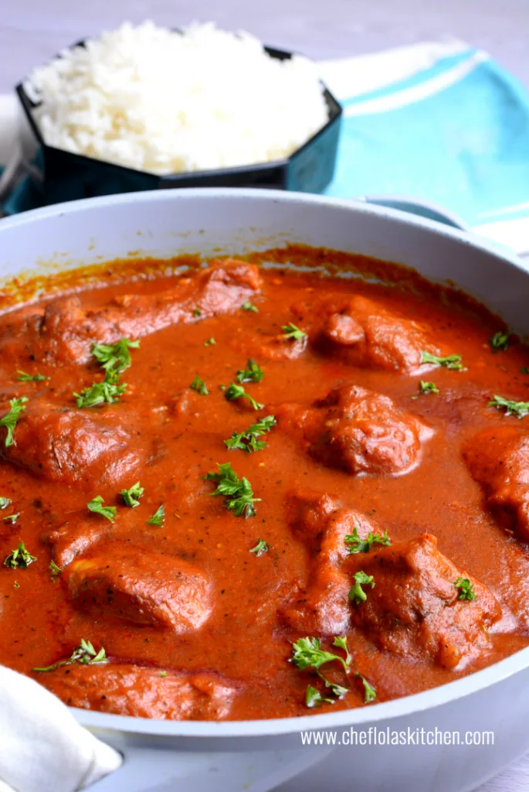

Nigerian Chicken Stew

Description
Ingredients
Chicken
- 8 Chicken drumsticks
- 1 tsp Thyme
- 1 tsp Paprika
- 1 tsp curry powder
- Salt and pepper to taste
- ½ Cup Vegetable oil
- 2 tbsp. onion diced
The Stew
- 1 medium onion diced
- 1½- 2 Cups Chicken Stock
- 1 Tsp Curry Powder
- 1 Tsp Rosemary
- 1 tsp Paprika
- 2 bay leaves
- 2 Tsp chicken bouillon powder or 2 Chicken cubes
- 1/4 cup olive oil or vegetable oil
- 2 tbsp tomato paste
- 1 to 1½ cups Chicken stock I used the liquid from cooking the Chicken
- 1 teaspoon Curry powder
- 1 teaspoon dried thyme
- 1 teaspoon chicken bouillon or Chicken bouillon
- Salt to taste If needed
Instructions
- Slice the tomatoes, peppers, and onions into two halves and place them in a sheet pan alongside the garlic cloves. Brush generously with oil and place in a 425F preheated oven and roast for 30 minutes or till slightly charred. Blend everything with the ginger root and set aside.
- Season the chicken with paprika, thyme, curry powder, salt, and pepper. Set aside.
- In a large skillet, heat oil over medium heat, add 2 tbsp from the diced onions, and cook till the oil becomes fragrant.
- Add the chicken legs and fry until they become well browned on both sides—about 10 minutes on each side. Remove from pan and set aside.
- Add the remaining diced onions inside the same pan where the chicken was fried. Cook till the onions become translucent. Add the blended sauce and bay leaves and cook for 5 to 10 minutes.
- Add the chicken broth, paprika, curry powder, rosemary, bouillon powder, black pepper, and salt to taste.
- Gently put the fried chicken in the sauce and leave to simmer until the chicken becomes tender about 20 minutes – a little more or less depending on how big your chicken is.
- Stir occasionally to prevent burning and adjust the thickness of stew with water or stock if necessary.
- Serve over white rice, pasta, couscous, or eat with freshly baked bread.